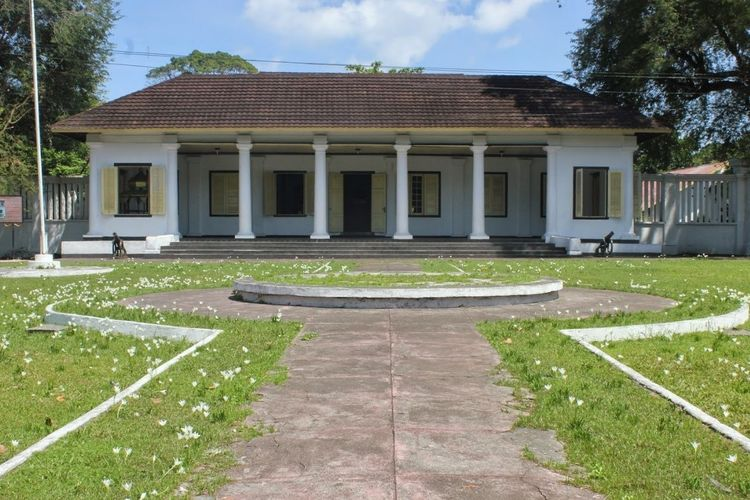
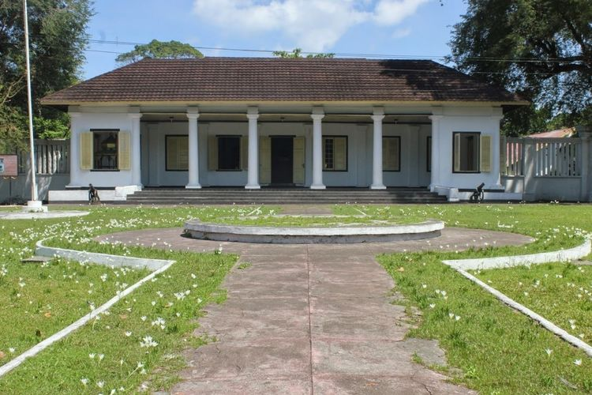

Sejarah Banda Neira
Sebelum abad ke-15, Kepulauan Banda sudah terkenal di dunia sebagai daerah produsen buah pala. Menurut jurnal Banda Naira dalam Prespektif Sejarah Maritim karya Mezak Wakim S.Pd, kontak awal Kepulauan Banda terjadi dengan bangsa-bangsa Asia, seperti para pelaut dan pedagang Melayu, India, Cina dan Arab. Selain menjual pala, orang-orang Banda juga ikut serta dalam pelayaran perdagangan sampai ke Malaka. Mereka juga ikut dalam pelayaran niaga, dan memiliki armada dagang sendiri yang mengangkut hasil-hasil bumi dari pulau-pulau lain ke Banda. anda pun memiliki armada perang laut yang dikenal dengan istilah “Korakora” atau Belang. Kora-kora terbagi atas dua jenis, yakni khusus untuk berperang dan jenis khusus untuk melayani perjalanan Raja.
Menjelang abad ke-16, buah pala yang menjadi hasil utama Kepulauan Banda merupakan komoditi dunia yang dibutuhkan masyarakat Eropa. Ada seorang penjelajah Portugis, namanya Laksamana Alfonso de Albuquerque yang berupaya menemukan kepulauan rempah-rempah. Singkat cerita, ia mendapat informasi bahwa di Malaka terdapat banyak rempah-rempah. Akhirnya, ia bertolak ke Asia dan pada tahun 1511 berhasil menalukkan Malaka. Pada saat itu, pelaut dan pedagang Banda Neira juga telah memiliki pemukiman di Malaka. Setelah menduduki Malaka kurang lebih 3 bulan, pada November 1511 Albuquerque mengirimkan dua kapal layarnya untuk menemukan kepulauan Banda yang kaya akan buah pala.